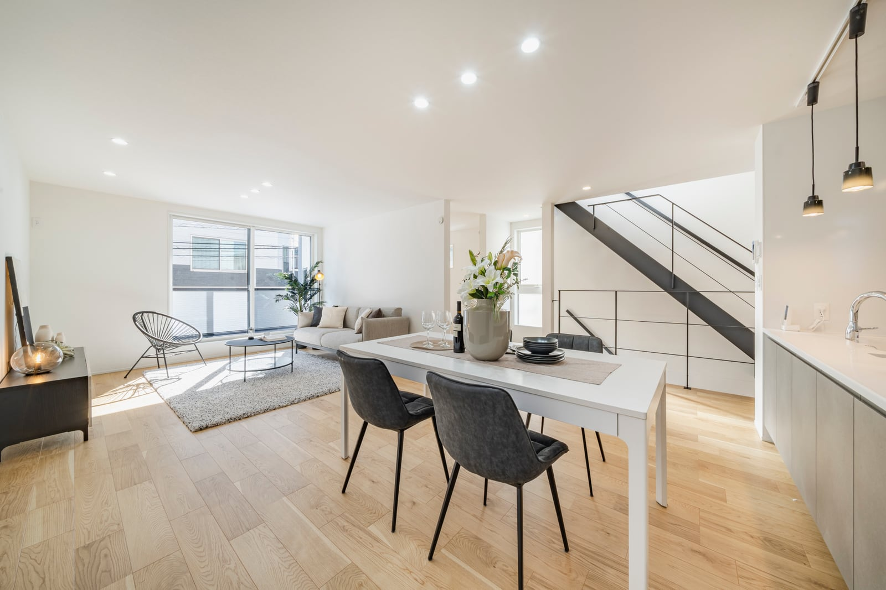

← 回首頁

2026年東京23區民宿法規完全指南
民泊新法、簡易宿所、特區民泊與各區限制完整比較
資料基準日：2026年6月20日
這篇是寫給「正在考慮在東京買房做民宿」的台灣朋友。我盡量用你看得懂的方式，把日本民宿的制度、各區能營業幾天、2026年的新變化、以及買現成民宿物件的風險講清楚。每一區都附上官方連結。
一、2026年最重要的結論
1. 「180日」是全國法律上限，不是保證你能營業180日。各區可能限制成只有週末、長假、約120日、約63日，甚至禁止新設。
2. 同一區、同一條街、甚至同一房型，合法營業日數也可能完全不同——因為會受用途地域、文教/學校限制、管理規約、申報「正式受理日期」、名義人與管理方式影響。
3. Airbnb 上有刊登 ≠ 合法；有民宿申報號碼 ≠ 你買下後可以直接承接。
4. 2026年東京整體趨勢：保護住宅環境、限制「家主不在型」、強化居民說明與垃圾/申訴管理、要求管理人更接近現場、限制住宅區新設民宿。
二、日本合法住宿的三種制度
年度計算：每年4月1日正午至隔年4月1日正午；每日原則以正午至隔日正午為一日。
官方：民泊新法｜旅館業法｜特區民泊
三、法規變化時間軸（2018→2026）
- 2018/6/15：住宅宿泊事業法（民泊新法）正式施行，建立屆出制度，全國原則上限180日。
- 地方政府可依民泊新法第18條，以條例限制營業區域與日期。
- 2023/12/13：旅館業法修正（事業轉讓、住宿者名簿、感染症相關制度等）。
- 2025～2026：東京多區陸續加強「家主不在型」、現場管理、居民說明、垃圾處理，並新設限制（詳見各區）。
四、2026年東京民宿政策趨勢
- 保護住宅居住環境
- 限制「家主不在型」民宿
- 強化申報前的居民事前說明
- 強化垃圾與申訴管理
- 要求管理人更接近現場（縮短緊急到場時間）
- 限制住宅區新設民宿
五、東京23區逐區說明
以下依各區官方資訊整理；「営業日限制」多以「正午至正午」計算。涉及施行日期與過渡措施者，務必以正式受理日期向該區個別確認。
千代田區 2026新規
- 2026/6/30前受理：依家主居住型、管理人現場型、緊急趕到型分別適用不同限制；文教地區、學校周邊、人口密集區較嚴。
- 2026/7/1後受理：家主不在型大幅加嚴；文教/學校周邊/人口密集地區可能全年禁止；僅部分人口較少的指定區域可在180日內營業；須建立有效緊急應變、申報前須完成居民說明。
- 新規原則不追溯適用於2026/7/1前已正式受理案件。
千代田區官方
中央區
- 全區原則禁止週一正午至週六正午營業（實務上為週末型：週六正午後至週一正午）。
- 申報前須進行居民說明；須建立可迅速到場的管理及申訴體制。
中央區官方
港區
- 限制對象主要為第一/二種低層、第一/二種中高層住居專用地域、文教地區等。
- 家主不在型原則只能於學校長假營業：春約3/20–4/10、夏約7/10–8/31、冬約12/20–1/10。
港區官方
新宿區
- 住居專用地域原則禁止週一正午至週五正午營業；可於週五正午後至週一正午及部分國定假日前後營業。
- 商業地域等非限制區相對寬鬆，但仍受180日上限。
新宿區官方
文京區
- 限制區域含住居專用、住居、準工業、文教地區等；原則禁止週日正午至週五正午營業。
- 多數住宅區實務上以週末型為主。
文京區官方
台東區
- 經營者或管理人未於住宿期間持續在場時，原則禁止週一正午至週六正午營業；國定假日及年末年始可能例外。
- 有現場持續管理體制者，適用規定可能不同。
台東區官方
墨田區 2026/4/1分界
- 2026/3/31前正式受理：原則不適用2026年新增日期限制。
- 2026/4/1後正式受理：原則禁止週日正午至週五正午營業；若管理業者等於住宿期間持續在場，可能不受日期限制。
- 2026年起加強巡查、居民說明與現場管理。
墨田區官方
江東區
- 全區原則禁止週一正午至週六正午營業；主要為週末及部分連假。
江東區官方
品川區
- 鄰近商業地域及商業地域相對寬鬆；文教地區仍可能受限。
- 其他住宅用途地域原則禁止週一正午至週六正午營業，多數住宅區接近週末限定。
品川區官方
目黑區
- 全區原則禁止週日正午至週五正午營業（可營業期間主要為週五正午後至週日正午）。
- 屬東京限制較嚴格的區之一。
目黑區官方
大田區 含特區民泊 2026/4/1強化
- 民泊新法：家主不在型若位於中小學周邊約100公尺，原則限制週一正午至週五正午營業。
- 2026/4/1起強化：居民說明範圍約由10公尺擴大至20公尺、須考慮道路對面住戶；緊急到場收緊為徒步約10分鐘內；事業垃圾收運頻率提高。
- 特區民泊：原則至少2晚3日、無180日限制，須符合用途地域、面積、建築、消防及外語服務要求。
大田區官方
世田谷區
- 住居專用地域原則禁止週一正午至週六正午營業；主要為週末及部分連假。
世田谷區官方
澀谷區 2026/7/1分界
- 2026/6/30前受理：限制區域主要為文教地區、住居專用地域，原則僅能於學校長假等指定期間營業，實際約63日。
- 2026/7/1後受理：限制區域擴大加入第一/二種住居地域、準住居地域；例外收緊（主要限個人經營、經營者住在同棟/同基地/相鄰住宅、客房不超過5間）。
- 居民事前說明由申報前7日延長為60日；須提出事業垃圾處理業者及契約資料。2026/7/1前已受理案件原則適用舊規。
澀谷區官方｜改正概要 PDF
中野區
- 住居專用地域原則禁止週一正午至週五正午營業；家主實際居住並符合條件時可能例外。
- 中野區正研議進一步加強條例，目標約2027年4月——並非2026年6月的現行規定，勿把草案當現行法。
中野區官方
杉並區
- 家主不在型若位於住居專用地域，原則禁止週一正午至週五正午營業；國定假日前後可能例外。
- 家主居住型相對寬鬆。
杉並區官方
豐島區 2026/12/16大改
- 2025/12/15起已強化：申報前居民說明會、海外經營者原則須設日本國內代理人、依居民要求召開說明會、與町會/自治會協調、強化申訴管理。
- 至2026/12/15原則仍以180日為基準。
- 2026/12/16起：全區原則只能於3/15–4/10、7/1–8/31、12/15–1/14營業（合計約120日）；住居專用、住居、準工業、文教地區等原則禁止新設；新日期限制可能影響既有民宿。
豐島區官方｜概要 PDF
北區
- 截至2026/6/20，尚未施行全面區域及營業日期限制，原則仍依180日上限及區方指導管理。
- 正研議新條例，預計可能2027年左右施行；未正式施行前不可把草案當現行法規。
北區官方
荒川區
- 全區原則禁止週一正午至週六正午營業；主要為週末及部分國定假日。
荒川區官方
板橋區
- 住居專用地域原則禁止週日正午至週五正午營業；國定假日前後可能例外。
- 家主居住型或有立即有效現場應變體制者，可能適用例外。
板橋區官方
練馬區
- 住居專用地域原則禁止週一正午至週五正午營業；通常可於週五正午後至週一正午及國定假日前後營業。
- 土地跨越不同用途地域時，須確認主要面積所屬用途地域。
練馬區官方
足立區
- 住居專用地域原則禁止週一正午至週五正午營業；國定假日前後可能例外。
- 年末年始另有限制：原則上12/31正午至1/3正午不得營業。
足立區官方
葛飾區 2026/4/1分界
- 2026/3/31前正式受理：暫不適用2026年新增日期限制。
- 2026/4/1後：商業地域原則可於180日內營業；商業地域以外，管理人持續在場時可於180日內，無管理人持續在場則原則禁止週一正午至週六正午（假日/年末年始可能例外）。
- 加強現場巡查、申訴處理、管理紀錄（原則保存3年）、垃圾與住宿者行為管理。
- 名義變更：經營者改變時可能須廢止舊申報、由新經營者重新申報；買已申報物件不代表可承接舊案件過渡待遇。
葛飾區官方｜新舊對象表 PDF
江戶川區 2026/7/1新條例
- 限制區域含多數住宅用途地域（第一/二種低層、第一/二種中高層住居專用、第一/二種住居、準住居、田園住居地域）。
- 2026/7/1後正式受理的新案件：上述限制區域原則全年禁止經營民宿。
- 例外須同時符合：①經營者已於同棟/同基地/相鄰住宅實際居住至少3個月；②住宿者入住期間經營者不得離開；③經營者管理客房不超過5間並親自管理。
- 過渡：2026/7/1前已正式受理可適用過渡措施；僅送資料但未完成補正及正式受理，不一定適用舊規。
- 其他：事前居民說明、民宿標誌、申訴與緊急應變、合法垃圾處理、申訴紀錄原則保存3年。
江戶川區官方｜條例 PDF
六、東京23區快速比較表
本表為簡化整理，實際限制（含例外條件）請以各區官方與正式受理日期為準。
七、公寓能不能經營民宿？
就算法律與用途地域允許，遇到下列情況原則上仍不能經營：
- 管理規約明文禁止住宅宿泊事業
- 管理組合已有禁止決議
- 租賃契約禁止轉租；房東未同意民宿或轉租
- 建物用途、消防或避難設備不符合
- 住宅貸款契約禁止營業用途
申報公寓民宿時，通常須確認：管理規約、管理組合意思、房東同意、所有人及共有人同意、是否有其他大樓使用細則。
官方：東京都・分讓公寓民宿資訊
八、購買現成民宿物件的重大風險
住宅宿泊事業的屆出原則上是「以經營者為主體」，不是單純附著在房屋上。房屋買賣或經營者改變時，可能需要：原經營者廢止、新買家重新申報、重新進行居民說明、重新確認管理規約，並適用「申報當時」的新條例。
賣方宣稱「已有民宿牌照」，買方仍須確認：實際制度、屆出/許可號碼、名義人、正式受理日期、是否仍有效、是否有違規紀錄、是否屬過渡案件、名義變更後能否維持過渡待遇。
特別注意新舊制度分界日：墨田區 2026/4/1、葛飾區 2026/4/1、千代田區 2026/7/1、澀谷區 2026/7/1、江戶川區 2026/7/1、豐島區 2026/12/16。買在分界日前後，適用的規定可能完全不同。
九、申報號碼／許可能不能承接？
不一定。民泊申報、旅館業許可、特區民泊認定是三種不同制度，承接條件各異。多數情況下，經營者變更須廢止舊申報、由新買家重新申報，並可能因「重新申報時點」而適用更嚴的新條例。廣告中所稱「民宿牌照」務必進一步確認制度、名義人與有效狀態。
十、建築、消防與用途地域
用途地域允許民宿，不等於建築與消防一定合格。須確認：建物登記用途、建築確認資料、是否需用途變更、防火/準防火地域、避難路線、緊急照明、火災警報器、自動火災報知設備、誘導燈、防火區劃、樓層與面積、無窗居室、木造共同住宅、地下室、狹小道路、消防設備追加成本。
民宿主管窗口（區役所/保健所）、建築主管機關、消防署是不同部門，必須分別確認，缺一不可。
十一、住宅貸款、保險與稅務風險
- 自住住宅貸款物件改作民宿，可能違反貸款契約，被要求改為投資貸款、提高利率或提前清償。
- 火災保險的用途可能需要變更。
- 民宿收入涉及所得稅、住民稅、消費稅及地方住宿稅等，應由稅理士個別確認。
十二、購買前完整調查流程
- 確認經營制度：民泊新法／簡易宿所／特區民泊。
- 確認地址及都市計畫：用途地域、文教地區、學校距離、地區計畫、防火/準防火地域、建物用途。
- 確認申報資料：屆出號碼、屆出人、正式受理日期、廢止/變更紀錄、過渡措施、違規及申訴紀錄。
- 確認權利關係：所有權、共有關係、租賃契約、轉租許可、房東同意、管理規約、管理組合決議、信託關係。
- 向主管機關事前諮詢：區役所/保健所民宿窗口、建築指導部門、都市計畫部門、管轄消防署。
- 確認管理體制：家主是否居住、管理人是否持續在場、緊急到場時間、申訴電話、外語服務、垃圾處理、清掃管理。
- 計算真實收益（見下節）。
十三、真實收益怎麼算（不要用365日或一律180日）
合法可營業日數 × 實際住房率 × 每晚平均房價
－ 平台手續費 － 清掃費 － 管理業者費用 － 水電瓦斯 － 網路 － 備品 － 垃圾處理費 － 消防設備維護 － 管理費及修繕積立金 － 固定資產稅 － 保險 － 住宿稅及其他稅 － 鄰居申訴及緊急應變成本
例：某物件即使全國上限180日，但所在地只能週末營業，收益試算就不能用「180日滿額」計算，得用實際合法可營業日數（可能只剩約60～120日）來估。
十四、買賣契約可考慮的保護條款
- 以「主管機關確認可申報」為成交條件
- 以「管理規約允許民宿」為條件
- 以「消防改善費不超過一定金額」為條件
- 賣方須提供完整申報及營運資料
- 賣方保證沒有未揭露的違規、命令或重大申訴
- 若無法重新申報，買方可解除契約或重新協議
- 明確約定既有帳號、家具、預約及營業資料是否包含於交易
十五、適合 / 不適合民宿投資的物件特徵
較適合：位於商業地域或限制較寬區域、可全年或週末高需求、管理規約允許、消防易達標、近車站、屋主可居住或能就近管理。
較不適合：位於住居專用地域且面臨全年禁止/新設限制、管理規約禁止民宿、文教/學校周邊、消防改善成本高、難以安排管理人就近應變。
十六、結論
民宿物件的價值，不只是房屋本身，而是由：物件地址＋用途地域＋文教及學校限制＋管理規約＋建築消防條件＋經營型態＋正式受理日期＋地方條例＋管理人的現場應變能力共同決定。
同一棟樓、同一條街、甚至同一房型，也可能因受理日期、名義人及管理方式不同，而有完全不同的合法營業日數。買民宿物件，請務必逐項調查、向主管機關個別確認。
十七、官方資料來源
想評估某個物件能不能做民宿？
把地址與圖面傳給周周，我幫你看制度、用途地域與風險。
💬 加 LINE 問周周
本工具/文章製作者：周欣妤（周周）｜株式会社アンドプラス
免責聲明
本文依據日本國土交通省、厚生勞動省、東京都及東京23區政府截至2026年6月20日公開的法令、條例及行政資訊整理。地方條例、施行日期、過渡措施及行政解釋仍可能修正。實際案件必須以具體地址、用途地域、建物狀況、申報日期及經營方式，向所在地主管機關、消防署、建築部門及管理組合個別確認。本文僅供不動產購買及經營規劃參考，不構成律師、行政書士、建築士、消防設備士或稅理士的個別專業意見。